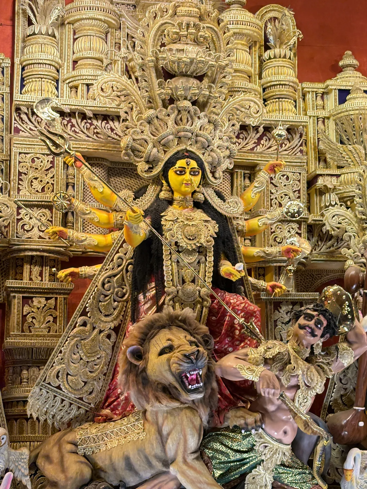

Your photograph, your work
Enter original photographs that you captured yourself.
DURGA PUJA PHOTOGRAPHY COMPETITION · 2026
St. Michael's High School, Patna
Presented by the Pixel Art Club
A thousand details. A thousand ways to see them.
Show us the moment that stayed with you.
ENTRIES CLOSE 21 October 2026

Not just the grand moments. The small ones, too.
The glow before the evening aarti. The hands behind a pandal. A face in the crowd, a flash of colour, a quiet pause. We invite you to photograph the spirit of Durga Puja as you experience it.
Bring your own point of view. The most memorable frame is often the one only you would notice.
Read the entry guidelinesDevotion, artistry, people, light or an unexpected detail—follow the moment that moves you.
Every photograph begins with paying attention. Here are a few festival moments to get your eye wandering.
Nine moments from the festival. What will yours be?
Plan ahead and give yourself time to find—and make—your photograph.
Start exploring. Look for a detail or story that feels like yours.
Send in up to five photographs using the entry form.
A quick read before you enter helps make the competition fair for everyone.
Enter original photographs that you captured yourself.
You may submit up to five photographs. Quality always matters more than quantity.
Crop, colour and exposure adjustments are welcome. Composites or changes that alter the scene are not.
Use any phone or camera. No special equipment is needed.
Upload a full-resolution JPEG or PNG—not a screenshot or a compressed chat copy.
Respect people's privacy and photograph public spaces, events and individuals with consideration whenever appropriate.
Do not submit another person's work or remove a creator's watermark.
Entries must be photographs. AI-generated or AI-altered images are not eligible.
Submit by 21 October 2026, 11:59 PM IST.
YOUR FRAME IS WAITING
Entries close 21 October 2026 · 11:59 PM IST
Submissions are closed. Thank you for taking part.
Submit your entryReady to share your perspective? Use the entry form to send your details and photographs. Have your image files ready before you begin.
Before submitting, read the guidelines and check that your images are full-resolution.
Organised by the Pixel Art Club
St. Michael's High School, Patna
Open the secure Entry Form to add your details and upload your photographs.
Still unsure? Ask the Pixel Art Club at school.
The Competition is open to students of classes 9, 10, 11 & 12
Yes. Phone and camera photographs are equally welcome. Tell a good story with whatever you have.
You may submit up to five original photographs.
Basic cropping, colour and exposure adjustments are fine. AI-generated, AI-altered and composite images are not eligible.
Choose an entry button to open the Google Form in a new tab, then enter your details and upload your image files.
Shortlist and announcement dates will be shared through the school and the Pixel Art Club.
ONE FESTIVAL. YOUR POINT OF VIEW.